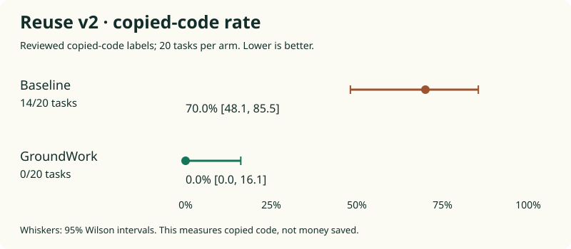

RECORDED DEVIN-AGENT EVIDENCE
Less copied code. Not a promise of savings.
v9 Phase A (PR #41: one-turn answers + batching guidance, measured, not shipped)
Navigation engineering gate passed with fewer actions per session (compliant 51.8 vs 60.3 baseline), no speed win (session-time CI includes zero, point estimate slower), tool-side time higher (−389% reduction), success 480/480 each arm. PR #41 was measured, not shipped. These navigation-only results are not an overall Phase A pass.
Stable-v1; collector/product source pin 36f54a0845fe2bf4184549cf5cef8f216a8957ab. There are 16 sessions per arm, 30 tasks per navigation session. Positive reduction favors GroundWork; all intervals are nominal 95% whole-session bootstrap CIs (10,000 draws, seed 0x51ab17ed). Captured actions are wrapper tool calls, not model conversation turns. Bytes are emitted tool output, not billed tokens or dollars.
The protocol-compliant v9c GroundWork arm is the official navigation gate. The regenerated-skill v9 arm is shown next to it as a disclosed deviation, never in its place. Both engineering gates pass: mean actions/session is no higher than baseline and the session-time reduction CI includes zero or better. Neither arm has a confirmatory latency win. The same 16 baseline sessions are reused; these are 48 unique navigation captures, not independent replications of the baseline. Success guardrails pass in every category.
| Navigation arm | Estimand | Baseline mean | GroundWork mean | Reduction [95% CI] | Success guardrail |
|---|---|---|---|---|---|
| Compliant v9c — official | Session elapsed/task (ms) | 5701.72 | 5782.44 | -1.42% [-9.81, 6.53] | met: 480/480 / 480/480 |
| Compliant v9c — official | Emitted bytes/session | 32680.50 | 34459.38 | -5.44% [-13.59, 1.79] | met: 480/480 / 480/480 |
| Compliant v9c — official | Tool-side ms/session | 1501.69 | 7336.66 | -388.56% [-475.34, -313.35] | met: 480/480 / 480/480 |
| Regenerated-skill v9 — deviation | Session elapsed/task (ms) | 5701.72 | 6005.23 | -5.32% [-13.94, 2.48] | met: 480/480 / 480/480 |
| Regenerated-skill v9 — deviation | Emitted bytes/session | 32680.50 | 35862.25 | -9.74% [-17.78, -2.07] | met: 480/480 / 480/480 |
| Regenerated-skill v9 — deviation | Tool-side ms/session | 1501.69 | 7895.47 | -425.77% [-545.32, -330.11] | met: 480/480 / 480/480 |
| Navigation arm | Baseline actions/session | GroundWork actions/session | GW − baseline [95% CI] | Navigation engineering gate |
|---|---|---|---|---|
| Compliant v9c — official | 60.31 | 51.81 | -8.50 [-11.25, -5.69] | PASS |
| Regenerated-skill v9 — deviation | 60.31 | 52.19 | -8.12 [-11.00, -5.44] | PASS |
EXPLORATORY ONLY — long-horizon; no confirmatory verdict
Long-horizon: no confirmatory verdict (incomplete collection under PROTOCOL.md). The grader rejected lh-09 run 6 for a malformed outline action: the agent omitted the mcp subcommand, and the wrapper recorded the failed invocation as action="outline". All raw exports remain unchanged. Exploratory analysis alone adapts that rejected action into a generic schema bucket, retaining its one-action count, 30 bytes and duration. The following normalized numbers are EXPLORATORY ONLY, with no confirmatory claim.
| EXPLORATORY ONLY — LH | Baseline mean | GroundWork mean | Reduction [95% CI] | Exploratory acceptance |
|---|---|---|---|---|
| Session elapsed/task (ms) | 9738.61 | 11303.73 | -16.07% [-25.07, -7.46] | 160/160 / 160/160; exploratory |
| Emitted bytes/session | 5627.19 | 7017.44 | -24.71% [-54.00, -2.14] | 160/160 / 160/160; exploratory |
| Tool-side ms/session | 559.80 | 1554.04 | -177.60% [-330.25, -73.96] | 160/160 / 160/160; exploratory |
Exploratory captured actions/session: baseline 19.56, GroundWork 18.31; GW − baseline -1.25 [-5.38, 2.62]. No long-horizon gate verdict or overall Phase A pass. Equal success is not a correctness win; engineering-gate passage is not proof of equivalence or speed superiority.
All 80 raw captures are retained: 32 navigation v9 (including deviation GroundWork), 16 compliant navigation v9c GroundWork, and 32 long-horizon v9. Navigation validates 48/48; original capture schema validates 79/80 overall. Exports record the collector revision, not an independent product-binary hash; the product source pin relies on the frozen same-checkout build instructions.
Full v9 analysis, provenance and normalization disclosure.
v10 (PR #48: engineering gates, not a speed win)
V10 measured PR #48 at product/collector/grader pin e3bdc7401daf7264b242b32a2d7bc4de09178f69, not a claim that PR #48 is shipped. There are 96 unchanged raw captures: 16 sessions per arm per suite, sharing one baseline within each suite. Compliant arms are official; regenerated-skill arms are disclosed deviations and never stand in for official results.
The navigation engineering gate passed on fewer actions, in both official and disclosed deviation arms. There is no speed win: navigation session-time intervals cross zero, and navigation tool-side time is about 5x baseline (5.66x official; 5.57x disclosed deviation). The LH disclosed deviation also passed its engineering gate; its session-time interval crosses zero.
Engineering gate: GW mean actions/session no higher than baseline, session-time reduction CI includes zero or better, and no category success drop. These are captured actions, not LLM conversation turns. Reductions are 100*(1-GW/B); positive favors GW. Nominal 95% intervals use 10,000 independent whole-session bootstrap draws per arm, seed 0x51ab17ed. Navigation success is 480/480 per arm; valid LH deviation and baseline are 160/160 each, with all category guardrails met. Gate passage is not superiority or equivalence; bytes are emitted output, not billed tokens or dollar savings.
| Comparison | Estimand | Baseline mean | GW mean | Reduction % [95% CI] |
|---|---|---|---|---|
| Navigation official | Session elapsed/task (ms) | 5668.09 | 5445.73 | 3.92 [-4.43, 11.31] |
| Navigation official | Emitted bytes/session | 32401.62 | 33028.19 | -1.93 [-8.26, 4.23] |
| Navigation official | Tool-side ms/session | 1315.68 | 7445.79 | -465.93 [-540.05, -405.27] |
| Navigation disclosed deviation | Session elapsed/task (ms) | 5668.09 | 5959.93 | -5.15 [-13.10, 1.98] |
| Navigation disclosed deviation | Emitted bytes/session | 32401.62 | 35947.62 | -10.94 [-20.11, -2.04] |
| Navigation disclosed deviation | Tool-side ms/session | 1315.68 | 7328.08 | -456.98 [-531.10, -390.89] |
| LH disclosed deviation | Session elapsed/task (ms) | 9418.56 | 10215.93 | -8.47 [-19.87, 1.55] |
| LH disclosed deviation | Emitted bytes/session | 5149.94 | 6333.25 | -22.98 [-45.58, -2.43] |
| LH disclosed deviation | Tool-side ms/session | 506.18 | 1242.24 | -145.42 [-225.64, -81.75] |
| Comparison | Baseline actions/session [95% CI] | GW actions/session [95% CI] | GW - B [95% CI] | Engineering gate |
|---|---|---|---|---|
| Navigation official | 57.12 [54.44, 59.69] | 50.31 [49.06, 51.75] | -6.81 [-9.75, -3.69] | PASS |
| Navigation disclosed deviation | 57.12 [54.44, 59.69] | 52.62 [50.06, 55.44] | -4.50 [-8.25, -0.62] | PASS |
| LH disclosed deviation | 17.44 [14.56, 20.75] | 17.31 [16.00, 19.00] | -0.12 [-3.75, 3.19] | PASS |
Official long-horizon — EXPLORATORY ONLY
Official long-horizon has no confirmatory verdict. The rejected capture v10-lh-groundwork-11, task lh-04, action "outline", is disclosed unchanged. EXPLORATORY ONLY: a separate analysis copy maps that one rejected action to the shell schema bucket, not an executed shell, retaining its count, 30 bytes, 0.07910900000001675 ms and timestamps. Exploratory official LH numbers support no publication claim and never replace official results.
| Comparison | Estimand | Baseline mean | GW mean | Reduction % [95% CI] |
|---|---|---|---|---|
| EXPLORATORY official LH | Session elapsed/task (ms) | 9418.56 | 10371.71 | -10.12 [-20.21, -0.79] |
| EXPLORATORY official LH | Emitted bytes/session | 5149.94 | 6298.06 | -22.29 [-43.04, -5.28] |
| EXPLORATORY official LH | Tool-side ms/session | 506.18 | 1304.47 | -157.71 [-243.83, -90.61] |
| Comparison | Baseline actions/session [95% CI] | GW actions/session [95% CI] | GW - B [95% CI] | Engineering gate |
|---|---|---|---|---|
| EXPLORATORY official LH | 17.44 [14.56, 20.75] | 17.44 [16.25, 18.81] | 0.00 [-3.50, 3.19] | NO CONFIRMATORY VERDICT |
18 never-started sessions across 17 units were terminated and relaunched; no data was collected from those attempts. Official nav baseline run 10 required two terminations. Final completed exports are all retained, including the schema-rejected official LH capture.
The capture.mjs root cause is in the capture harness, not product outline: an unknown subcommand falls through dispatch, then its caught error is recorded with action=argv[0], outside the schema enum. The written proposal is for a future pre-registered run only: reject unknown wrapper verbs before recording, with an explicit policy for failed-attempt counts and timing. No capture.mjs, schema, grader or PROTOCOL.md change is included.
Full v10 analysis and rejected-record/root-cause evidence · Inputs and hashes · Per-tool tables.
v8 (PR #39: fresh-root index cloning + bundled service, not shipped)
V8 publishes the completed v8b recollection: 16 sessions per arm per suite, product and unchanged stable-v1 collector/grader pinned to 243bb549e352ee4a63e968230055cda0c165bbe5. The earlier 3e804c9 run was killed and discarded; none of its captures are included.
| Suite | Estimand | Baseline mean | GroundWork mean | Reduction [95% CI] | Success guardrail |
|---|---|---|---|---|---|
| nav | Session elapsed/task (ms) | 5349.62 | 6321.17 | -18.2% [-27.1, -10.4] | met: 480/480 / 480/480 |
| nav | Emitted bytes/session | 34848.31 | 33048.69 | 5.2% [-3.8, 13.2] | met: 480/480 / 480/480 |
| nav | Tool-side ms/session | 1604.53 | 8739.16 | -444.7% [-501.5, -395.3] | met: 480/480 / 480/480 |
| long-horizon | Session elapsed/task (ms) | 9308.21 | 10814.69 | -16.2% [-28.7, -4.7] | met: 160/160 / 160/160 |
| long-horizon | Emitted bytes/session | 5858.75 | 6774.69 | -15.6% [-40.5, 8.2] | met: 160/160 / 160/160 |
| long-horizon | Tool-side ms/session | 504.32 | 1561.25 | -209.6% [-324.3, -129.9] | met: 160/160 / 160/160 |
Tool-level find_code fell from 434 to 285ms mean per call and LH repo_map from 616 to 337ms (descriptive cross-round), but end to end GroundWork was still significantly slower in both suites: navigation −18.2% [−27.1, −10.4], long-horizon −16.2% [−28.7, −4.7]. Output CIs cross zero in both suites; tool-side time is significantly higher in both. Navigation’s elapsed gap is about 29s per session versus about 7s of additional tool time: most of the loss is outside captured dispatch, in the agent-turn/inter-action portion of the envelope. This residual does not identify model thinking, provider latency or a causal product effect. These product changes were measured and not shipped on main.
Success guardrails are met (480/480 each navigation, 160/160 each LH). Neither suite meets the confirmatory latency-win rule: adjusted 97.5% per-suite lower bounds are −28.35% navigation and −30.45% LH. Positive reduction favors GW; all nominal 95% intervals use the frozen whole-session bootstrap. Equal success is not a correctness win. LH GW16’s 86.216s envelope is complete and valid under the timing rules; it is retained. Tool bytes are not billed tokens or dollar savings.
Full v8 analysis and tool totals.
Stable protocol (v7)
Completed: 16 sessions per arm per suite (64 total), collector 01b1426; product main at e0cad99, experimental read paths off. All submitted sessions are retained.
Pre-registered primary estimands are session elapsed/task (ms), aggregate emitted UTF-8 bytes/session, and total tool-side ms/session. Each metric row reports baseline mean → GroundWork mean and reduction = 100 × (1 − GW mean / baseline mean), with a 95% whole-session bootstrap CI: 10,000 draws per arm, fixed seed 0x51ab17ed. Positive reduction favors GroundWork. Success is a guardrail (no category success drop); confirmatory latency claims also require the protocol’s multiplicity rule. Old median task-window metrics remain secondary.
| Suite | Estimand | Baseline mean | GroundWork mean | Reduction [95% CI] | Success guardrail |
|---|---|---|---|---|---|
| nav | Session elapsed/task (ms) | 5341.10 | 6350.47 | -18.9% [-26.8, -11.2] | met: 480/480 / 480/480 |
| nav | Emitted bytes/session | 33383.56 | 34914.25 | -4.6% [-12.1, 2.3] | met: 480/480 / 480/480 |
| nav | Tool-side ms/session | 1599.86 | 10774.70 | -573.5% [-646.7, -503.6] | met: 480/480 / 480/480 |
| long-horizon | Session elapsed/task (ms) | 9836.58 | 10536.84 | -7.1% [-19.7, 3.9] | met: 160/160 / 160/160 |
| long-horizon | Emitted bytes/session | 5816.06 | 6858.38 | -17.9% [-27.6, -8.7] | met: 160/160 / 160/160 |
| long-horizon | Tool-side ms/session | 523.46 | 1253.07 | -139.4% [-206.7, -88.9] | met: 160/160 / 160/160 |
nav: session elapsed increased cost (nominal 95% CI excludes zero); emitted output inconclusive (95% CI includes zero); tool-side time increased cost (nominal 95% CI excludes zero). Success guardrail met. Multiplicity-adjusted latency lower bound: -27.9%; no confirmatory latency win. long-horizon: session elapsed inconclusive (95% CI includes zero); emitted output increased cost (nominal 95% CI excludes zero); tool-side time increased cost (nominal 95% CI excludes zero). Success guardrail met. Multiplicity-adjusted latency lower bound: -21.6%; no confirmatory latency win.
V7 workflow notes (64 reviewed, including all 10 mentioning failed/error): early cwd/env/usage failures and retries, including harness-source inspection by LH GW-2/7; repeated orientation and begin attempts; external scratch/staged scripts and command files; captured shell cat/sed reads; AGENTS-seeded names and carried evidence; two captured invalid read_symbols calls; a similarity check after writing, new shared helpers without similarity checks, confirmation-based verify_calls skips, and uneven smoke testing. Sequential command chaining was also reported. All sessions remain included; these are not perfectly uniform executions. Session elapsed includes post-init retry/gap time, but uncaptured outputs and work before init remain unmeasured. Captured tool spans do not separate daemon, relay and hook subcomponents.
Tool-side totals and deviation review.
The harness starts the v7 session clock once the first workspace is ready, before revealing tasks, and ends it at the last finish. Inter-task gaps are included; provisioning, install/build and pre-init instructions are excluded. Tool-side time sums serial dispatch spans, including hooks and transport, but excludes CLI startup before dispatch and final output delivery. This is not a clock around the entire outer agent call.
Why change? Agent-owned begin→finish windows can include or exclude planning and turn latency depending on command batching. In archived v6 long-horizon runs, excluded gaps were about 50% of the baseline’s observed first-begin→last-finish span versus 11% of GroundWork’s. These figures show measurement-window allocation, not identified thinking/provider latency or a performance win.
Post-hoc historical envelope re-analysis (not v7)
Post-hoc sensitivity only, not v7 results and not a replacement for the published historical rows below. Elapsed is a first-begin→last-finish envelope proxy reconstructed from old records, not pre-disclosure controller timing. Ratios of arm means use eight sessions/arm and 95% whole-session bootstrap CIs with the same seed/draw count. Historical tool-side time is unavailable. B = baseline; GW = GroundWork. Rounds changed products/protocols and are not pooled. Bytes are tool output, not billed model tokens or dollar savings.
| Suite | Archive | Envelope s/task B → GW; reduction [95% CI] | Bytes/session B → GW; reduction [95% CI] | Tool-side time | Success B / GW | Guardrail |
|---|---|---|---|---|---|---|
| nav | original | 5.81 → 7.67; -32.1% [-49.5, -15.8] | 34400.13 → 29380.38; 14.6% [4.3, 23.9] | unavailable | 240/240 / 240/240 | met |
| nav | v2 | 5.43 → 6.86; -26.3% [-38.9, -13.8] | 34027.50 → 26857.63; 21.1% [13.3, 28.1] | unavailable | 240/240 / 240/240 | met |
| nav | v3 | 5.44 → 6.31; -16.0% [-30.8, -3.2] | 35453.75 → 25243.75; 28.8% [19.1, 37.5] | unavailable | 240/240 / 240/240 | met |
| nav | v4 | 5.47 → 6.68; -22.2% [-34.8, -11.5] | 35396.00 → 37306.63; -5.4% [-15.1, 3.7] | unavailable | 240/240 / 240/240 | met |
| nav | v5 | 5.53 → 6.51; -17.8% [-33.8, -3.7] | 36081.63 → 36675.88; -1.6% [-16.8, 10.1] | unavailable | 240/240 / 240/240 | met |
| nav | v6 | 5.46 → 6.24; -14.3% [-27.7, -2.8] | 34267.00 → 31159.50; 9.1% [-0.4, 17.8] | unavailable | 240/240 / 240/240 | met |
| long-horizon | original | 8.47 → 11.29; -33.2% [-52.7, -14.5] | 5778.25 → 8038.25; -39.1% [-85.3, -3.3] | unavailable | 80/80 / 80/80 | met |
| long-horizon | v2 | 9.70 → 11.51; -18.8% [-33.9, -5.0] | 5162.25 → 7199.88; -39.5% [-72.4, -16.5] | unavailable | 80/80 / 80/80 | met |
| long-horizon | v3 | 9.73 → 10.05; -3.3% [-23.5, 13.7] | 5244.50 → 6565.88; -25.2% [-77.7, 9.0] | unavailable | 80/80 / 80/80 | met |
| long-horizon | v4 | 9.72 → 11.31; -16.4% [-32.9, -1.7] | 6066.38 → 6098.13; -0.5% [-26.4, 18.6] | unavailable | 80/80 / 80/80 | met |
| long-horizon | v5 | 9.34 → 9.84; -5.4% [-24.5, 9.9] | 6705.63 → 6493.00; 3.2% [-17.3, 23.8] | unavailable | 80/80 / 80/80 | met |
| long-horizon | v6 | 8.85 → 10.42; -17.8% [-41.0, 1.0] | 4622.75 → 6098.25; -31.9% [-61.1, -11.4] | unavailable | 80/80 / 80/80 | met |
Pre-fix results
Reuse v2 copied-code rate fell from 14/20 (70%) to 0/20 (0%). In the eight-run navigation and long-horizon sets, task success remained identical. Compact navigation showed no statistically significant estimated-output change; long-horizon output increased significantly. GroundWork was significantly slower in both timed suites under the paired-task bootstrap. No billed-token or dollar savings can be established.
![Eight-run estimated-output reduction: compact navigation -2.0% [-25.2, 16.4]; long-horizon -63.2% [-86.1, -38.6]](./bench/token-reduction.svg)




Original / round 1 / round 2 / round 3 / round 4 / round 5 overhead experiments
Each experiment contains eight fresh paired runs per task; experiments are not pooled.
Round 1 (v2, e605fe9559cae088a2060a4ed53a27c32daa4df9): LH GroundWork used revised guidance (fewer required calls); navigation guidance was unchanged except the revision. Round 2 (v3, abafcba361f358b61e54fc906977209e494cf07a): the GroundWork arm prompts mirrored the new SKILL.md guidance: rg for trivial lookups, exact-first find_code, actionable-only find_similar, and verify_calls only for unconfirmed cross-file calls. Round 3 (v4, ff578514d78397faffd2ac1836fb3cbd03e62ee1): GroundWork navigation prompts mirror explore-first traces, opt-in find_code bodies, batched read_symbol and carried unchanged evidence; long-horizon prompts mirror cross-step/session reuse and batched verify_calls instead of verification-only rereads. The navigation capture allowlist adds explore; graders are unchanged. Each round is a protocol change as well as a tool change; baselines were re-collected at that round’s commit in completed experiments. Round 4 (v5, 6f242a68c4e2461a4156089f1195d60affcbbc59): batched outline, a daemon shared across workspace roots with root-local state, and fewer orientation/search/verification round trips. The round-3 read paths (large-Read compaction and explore-first guidance) are now default-off behind navigation.experimentalReadPaths; explore remains available, and batched read_symbol, include_body, hook forwarding and carried evidence remain on. Round 4 baselines were re-collected at its pinned commit. Do not attribute differences solely to implementation changes. Round 5 (v6, 2183b1ba50fb8669d43a318c883f3a9ac0c8ecb4): content/version-keyed graph-cache clones with root-local freshness checks, budgeted resolved definitions via read_symbol callee_depth, a thin relay bootstrap, and trace/stop-at-location guidance. Read pre/post hooks and the find_code post-hook are retained; experimental read paths remain default-off. These Round 5 product changes were measured at 2183b1b and are not shipped on main because they did not demonstrate a performance win. The historical measurements remain published; this publication does not ship the graph cache, callee_depth traces, relay bundle or associated guidance changes.
V2 protocol deviations: LH groundwork-4 and baseline-7 were executed by the session’s sidekick subagent using the same wrappers. LH groundwork-3 and groundwork-7 skipped verify_calls despite new cross-file calls. These are recorded executions, not perfectly uniform protocol adherence. The merged code also includes a later verify_calls budget fix for many unchecked files; that fix was not part of the measured e605fe9 runs.
V3 session notes: several GroundWork long-horizon runs skipped find_similar for small shared helpers and made no verify_calls because the targets had already been read, following the new guidance as written. A few sessions had early wrapper failures from incorrect working directories or environment variables; these were retried before work. One navigation GroundWork where_used validation error was not retried, and one navigation GroundWork session read a whole file using shell cat. These are recorded executions, not perfectly uniform tool use; wrapper failures and shell reads should not be silently treated as successful indexed navigation.
V4 workflow session notes: several GroundWork outline calls failed on path/files arguments instead of file, with corrected retries; early cwd/environment setup failures were also retried, sometimes before reaching capture. Navigation baseline-4 and GroundWork-8 used shell cat instead of the read wrapper; GroundWork-1/6 used shell sed for source ranges. These reads still went through the shell wrapper. Several navigation GroundWork runs seeded names from AGENTS.md or earlier tasks, then checked them with current-task tools. Some runs used local wrapper helpers, sequentially chained calls, or scripts staged outside the workspace; LH GroundWork-2 also wrote an unused /tmp/t4.mjs. Navigation GroundWork-1 used repo_map depth 2, and LH GroundWork-3 repeated an unchanged helper lookup. LH GroundWork-5 skipped similarity checks for compositions of confirmed helpers; LH GroundWork-4 skipped explicit verification after read_symbol confirmation. These are recorded executions, not perfectly uniform protocol adherence. Work outside wrappers or task timers is unmeasured; shell writes still do not dispatch edit or Stop hooks.
V5 workflow session notes: navigation baseline-1 submitted a finish and the next begin in the same turn with a three-second delay, so strict sequencing is not guaranteed. Several cwd/environment/shell/quoting failures were retried, some before capture. Navigation GroundWork-3/4/8 reported invalid read_symbols calls; GroundWork-1/4/5/6 used captured shell cat, and some edits used shell sed/git diff instead of read wrappers. Several searches used fitToBudget from the preloaded AGENTS.md. GroundWork-3 staged edit scripts in ~/edits using earlier-task definitions, then re-read targets in the edit tasks; GroundWork-7 used repo_map depth 2. LH baseline-3/4/6/8 staged scratch checks in /tmp, and baseline-7 was executed by a same-VM subagent. Several LH GroundWork runs used repo_map plus outline plus batched read_symbol rather than a single orientation step; GroundWork-7 repeated two unchanged helper lookups. GroundWork-1 called find_similar after writing the helper; GroundWork-4 skipped it for a new shared helper, while other runs skipped searches for requested exports or extensions. Several runs skipped explicit verify_calls because cross-file targets were already confirmed by unchanged read_symbol evidence. Quick checks and Python __pycache__ cleanup were also noted. These are recorded executions, not perfectly uniform protocol adherence. Work outside wrappers or task timers is unmeasured; shell writes still do not dispatch edit or Stop hooks.
V6 workflow session notes: navigation baseline-3 ran one rg directly outside the capture wrapper. Navigation GroundWork-1 reported an early non-wrapper shell failure and a gw-01 finish retry. Several sessions chained begin/finish/tool calls sequentially and used external wrapper scripts for cwd/environment or shell-function persistence; LH GroundWork-3 retried early cwd/unset-variable failures. Navigation GroundWork-2 reused paths learned in earlier tasks, and several GroundWork runs seeded fitToBudget or formatZodError from preloaded AGENTS.md while confirming answers with current-task tools. Navigation GroundWork-7/8 used captured shell cat instead of the read wrapper. Extra maps, depth-2 orientation and repeated confirmation after resolved locations were also noted. Navigation GroundWork-5 captured an invalid read_symbols call. Several LH GroundWork runs used outline plus read_symbol (sometimes also repo_map) rather than one orientation step; GroundWork-8 repeated the unchanged normalizeEmail body. LH GroundWork-1/2/4/5 introduced or extracted shared sorting helpers without similarity checks. Explicit verify_calls was skipped with reported prior confirmation of cross-file targets, consistent with the guidance when that evidence was unchanged. Edits included corrections and ad-hoc shell-wrapper smoke checks, some were untested, and Python cache cleanup was noted. These are recorded executions, not perfectly uniform protocol adherence. Work outside wrappers or task timers is unmeasured; shell writes still do not dispatch edit or Stop hooks.
| Eight-run suite / experiment | Success, baseline / GroundWork | Estimated-output reduction, median [95% CI] | Mean wall time, baseline → GroundWork | Wall-time reduction, median [95% CI] |
|---|---|---|---|---|
| Compact nav · original | 240/240 / 240/240 | -2.0% [-25.2, 16.4] | 5.58s → 7.44s | -31.3% [-55.4, -18.9] |
| Compact nav · round 1 | 240/240 / 240/240 | 0.3% [-25.4, 26.8] | 5.23s → 6.61s | -32.4% [-40.8, -11.5] |
| Compact nav · round 2 | 240/240 / 240/240 | 12.5% [-5.0, 27.2] | 5.18s → 6.06s | -12.4% [-27.2, -3.7] |
| Compact nav · Round 3 at ff57851 | 240/240 / 240/240 | -0.7% [-47.6, 11.3] | 5.23s → 6.46s | -15.5% [-42.8, -7.4] |
| Compact nav · Round 4 at 6f242a6 | 240/240 / 240/240 | -3.2% [-19.0, 4.9] | 5.28s → 6.31s | -11.8% [-36.6, -1.7] |
| Compact nav · Round 5 at 2183b1b | 240/240 / 240/240 | -4.0% [-35.0, 7.6] | 5.16s → 6.02s | -10.8% [-31.7, -2.8] |
| Long-horizon · original | 80/80 / 80/80 | -63.2% [-86.1, -38.6] | 5.18s → 11.04s | -110.1% [-132.7, -91.5] |
| Long-horizon · round 1 | 80/80 / 80/80 | -89.9% [-208.6, -46.8] | 8.07s → 9.50s | -22.6% [-46.2, -3.3] |
| Long-horizon · round 2 | 80/80 / 80/80 | -59.7% [-119.4, -25.0] | 6.98s → 7.57s | -8.4% [-47.9, 8.0] |
| Long-horizon · Round 3 at ff57851 | 80/80 / 80/80 | 1.6% [-23.3, 20.1] | 6.56s → 10.32s | -73.5% [-98.1, -35.4] |
| Long-horizon · Round 4 at 6f242a6 | 80/80 / 80/80 | 20.1% [6.5, 33.6] | 8.26s → 7.52s | 15.5% [-4.1, 22.6] |
| Long-horizon · Round 5 at 2183b1b | 80/80 / 80/80 | -40.7% [-60.3, 12.0] | 4.42s → 9.28s | -153.3% [-209.8, -66.4] |
Compact nav · round 1: the estimated-output interval includes zero (no significant change under this analysis); the wall-time interval excludes zero toward slower execution. Compact nav · round 2: the estimated-output interval includes zero (no significant change under this analysis); the wall-time interval excludes zero toward slower execution. Compact nav · Round 3 at ff57851: the estimated-output interval includes zero (no significant change under this analysis); the wall-time interval excludes zero toward slower execution. Compact nav · Round 4 at 6f242a6: the estimated-output interval includes zero (no significant change under this analysis); the wall-time interval excludes zero toward slower execution. Compact nav · Round 5 at 2183b1b: the estimated-output interval includes zero (no significant change under this analysis); the wall-time interval excludes zero toward slower execution. Long-horizon · round 1: the estimated-output interval excludes zero toward more output; the wall-time interval excludes zero toward slower execution. Long-horizon · round 2: the estimated-output interval excludes zero toward more output; the wall-time interval includes zero (no significant change under this analysis). Long-horizon · Round 3 at ff57851: the estimated-output interval includes zero (no significant change under this analysis); the wall-time interval excludes zero toward slower execution. Long-horizon · Round 4 at 6f242a6: the estimated-output interval excludes zero toward less output; the wall-time interval includes zero (no significant change under this analysis). Long-horizon · Round 5 at 2183b1b: the estimated-output interval includes zero (no significant change under this analysis); the wall-time interval excludes zero toward slower execution.
Estimated output is bytes/4, not billed model tokens; no dollar savings are established. Positive reductions mean less output or faster execution; negative means more output or slower execution. Intervals resample paired tasks after summing repeats, not independent sessions. Mean times and median percentage reductions are different estimands. Separate intervals do not test the before/after difference; sequential LH tasks share context.


Methodology: 95% bootstrap intervals resample paired tasks after summing repeats, not independent sessions; sequential long-horizon tasks share context. Protocol deviations were noted per session: some sessions wrote files via the shell wrapper rather than the read wrapper, and one long-horizon agent's first find_similar call failed validation. Results describe these captures, not perfectly uniform protocol executions.
Evidence JSON, methodology and detailed tables → · Reproduce charts offline with npm run bench:charts. Open any chart for a full-size view.